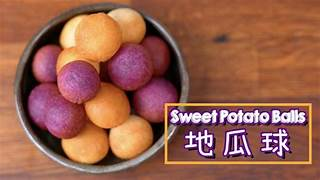
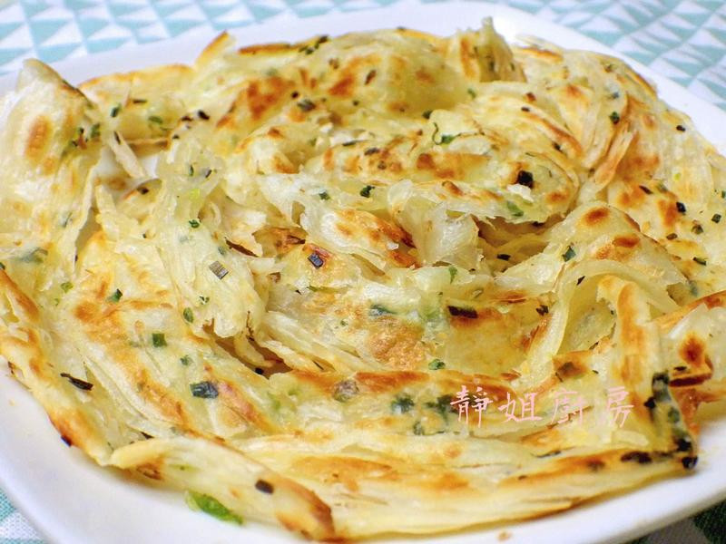

1. 鼎山臭臭鍋
臭臭鍋，係一種台灣料理，通常是指有鍋中有臭豆腐的火鍋，而且會由店家烹煮完成後再提供給客人，在台灣亦有許多火鍋店販賣此種火鍋。因為有發酵後的酸臭味，故稱之為臭臭鍋。
點擊查看歷史與食譜 →

2. 白糖粿
白糖粿的歷史可以追溯到中國福建的漳州和泉州，據說它是在農曆七夕的時候用來祭拜七娘媽的供品。傳統上，人們用白糖粿來祈求好姻緣，因為它香甜可口，特別受到女孩們的喜愛。炸白糖粿的時候，大家會在上面按個凹槽，據說這是為了裝織女的眼淚。
點擊查看歷史與食譜 →

3. 地瓜球
地瓜球的起源可以追溯到台灣的街頭小吃文化，這種美味的點心不僅在當地受到熱愛，也逐漸在國際間獲得了廣泛的認可。據說，地瓜球的發明者是一位熱愛創新的小販，他在一次偶然的機會中，將地瓜與糯米粉結合，創造出這種外酥內軟的美食。這種獨特的口感和香氣，讓人一試成主顧，迅速成為了當地居民和遊客的最愛。
點擊查看歷史與食譜 →

4. 蔥抓餅
蔥抓餅，抓餅（又變化出手抓餅）是一種現時流行於台灣和大陸的傳統小吃。因製作過程會用手將餅皮抓起，使餅皮看似鬆散，在台灣則是稱作「蔥抓餅」。蔥抓餅與蔥油餅的製作材料和做法相似，但其差異在於抓餅的餅皮有被手或工具抓出膨鬆的口感，並且可加蛋或芝士做為內餡與佐料食用。由於抓餅的做法簡單，材料準備容易，是一項快速可食用的熱食，因此會有家庭買餅皮回家製作食用，在夜市、超級市場皆有販賣蔥抓餅皮
點擊查看歷史與食譜 →

課程總結：學習心得報告
在本課程中，我們不僅探索了南臺灣的在地美食文化，更學習了如何運用現代網際網路技術與 AI 工具來進行資訊的彙整與網頁視覺化呈現。
點擊閱讀完整心得報告 →